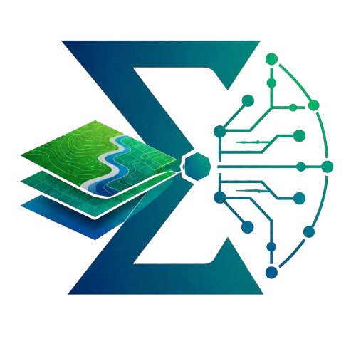
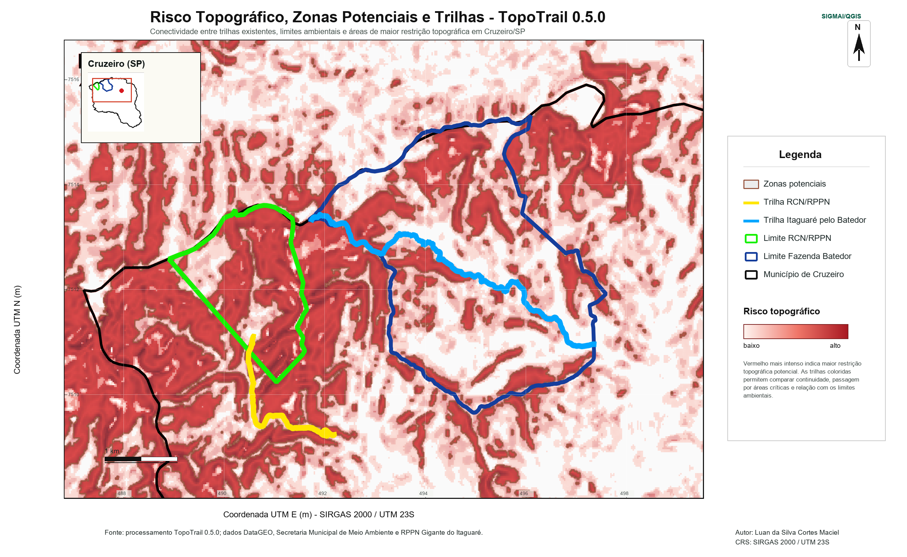

Sobre o Aplicativo
O SIGMAI é um plugin para QGIS criado para permitir que agentes de IA, ferramentas de desenvolvimento e clientes locais interajam com projetos GIS por comandos estruturados. Em vez de depender de automação visual frágil ou execução arbitrária de código, o SIGMAI oferece uma camada de tradução segura entre linguagem natural, JSON, PyQGIS, QGIS Processing, layouts cartográficos, camadas vetoriais, rasters, relatórios e workflows.
Objetivo
Operar o QGIS com IA
Permitir que IA consulte camadas, CRS, projetos, layouts, logs, plugins e ambiente QGIS por uma API local clara e auditável.
Gerar produtos cartográficos
Criar mapas técnicos, layouts profissionais, relatórios, exportações PDF/PNG e fluxos cartográficos com avaliação visual.
Apoiar desenvolvimento de plugins
Inspecionar, testar, empacotar e diagnosticar plugins QGIS, com modo desenvolvedor explícito e protegido por confirmação.
Como Funciona
Funções Principais
GIS e Cartografia
- Listagem e inspeção de camadas do projeto.
- Diagnóstico de CRS e reprojeção segura.
- Validação e correção de geometrias.
- Ferramentas vetoriais: buffer, clip, dissolve, intersection, union, difference e centroids.
- Geração de layouts, legendas, escala, norte, grade, créditos e exportação PDF/PNG.
IA, Segurança e Desenvolvimento
- Bridge local com token bearer por sessão.
- Session discovery para clientes locais confiáveis.
- Permissions, confirmations, dry-run e logs auditáveis.
- Inventário e diagnóstico de plugins QGIS instalados.
- Modo DEV explícito para desenvolvimento PyQGIS, desativado por padrão.
Paleta Visual
A identidade visual do SIGMAI usa uma base técnica e escura, com verde como cor de ação/segurança, cinzas para superfícies e vermelho apenas para alertas e Developer Mode.
#062A3A#075D68#00A86B#20E39A#DDF8EC#F6F8FA#D8E1E8#B42323Logos

Interface do Plugin
A HUD do SIGMAI foi desenhada para funcionar como painel técnico: status da Bridge, token de sessão, comandos rápidos, logs, ferramentas GIS, modo cartográfico, modo desenvolvedor e recursos para integração com IA.
Connection
Host local: 127.0.0.1 · Token por sessão · Pairing code · Logs
GIS Tools
Camadas, CRS, vetores, raster, layouts, workflows, plugins e relatórios.
Resultados e Exemplos Visuais
O exemplo abaixo mostra um produto cartográfico montado durante o desenvolvimento do SIGMAI. Neste caso, o SIGMAI atua como a ponte que permite à IA controlar o QGIS, organizar camadas, acionar ferramentas e compor o layout final; as camadas analíticas de áreas trilhaveis, risco e zonas potenciais são produzidas por plugins e ferramentas especializadas, como o TopoTrail.

Segurança e Privacidade
Local por padrão
A Bridge trabalha em `127.0.0.1`, sem expor servidor público para a rede.
Token por sessão
Clientes precisam de bearer token, e logs/relatórios não devem revelar tokens completos.
Modo DEV protegido
Execução Python só fica disponível quando o usuário ativa explicitamente o Developer Mode e confirma digitando “SIM”.
Autoria e Contexto
Autor do plugin: MACIEL, L. S. C.
E-mail: herpetomantiqueira@gmail.com
Desenvolvido por: Luan da Silva Cortes Maciel.
Contexto: ferramenta de pesquisa associada ao projeto Herpeto Mantiqueira.
O SIGMAI diferencia autoria do plugin e autoria dos mapas gerados. Mapas finais devem creditar o autor informado pelo usuário, a organização, a fonte de dados e a linha “Criado com SIGMAI/QGIS”, sem atribuir automaticamente todos os mapas ao autor do plugin.
Publicação e download
Download oficial: QGIS Python Plugins Repository
Como citar
MACIEL, L. S. C. (2026). SIGMAI: Local AI-QGIS interface with auditable commands. (V0.1.0). Zenodo. https://doi.org/10.5281/zenodo.20389287